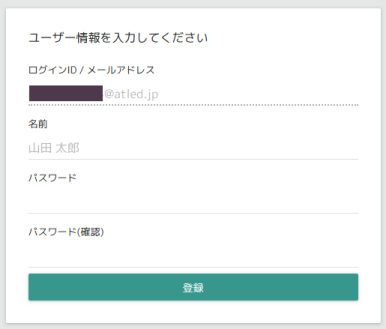
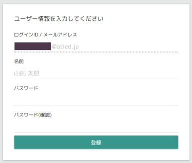

プロジェクト管理ツールは、作業の計画やスケジュール、および状況を管理・把握するためのツールです。
開発や生産管理といったプロジェクトはもちろん、チームの課題管理や個人のTodoリストなどにも
利用することができます。
概要
ログイン/ログアウト
ログイン時のアクセスURLは以下のとおりです。（ATLED用）
http://awpjm.atledcloud.jp/#/login/p706xg0
登録時のメールアドレスおよびパスワードを入力し、ログインします。
ログアウトを行う場合は、ヘッダー部右上からログアウトを選択してください。
http://awpjm.atledcloud.jp/#/login/p706xg0
登録時のメールアドレスおよびパスワードを入力し、ログインします。
ログアウトを行う場合は、ヘッダー部右上からログアウトを選択してください。
プロジェクト
プロジェクト管理ツールでは、まずプロジェクトを作成し、プロジェクトにメンバーを所属させることから開始します。
プロジェクトを新規作成する場合はプロジェクト一覧上部にある
[新規プロジェクト] ボタンを押下します。
プロジェクトを編集する場合は画面右上にある
[プロジェクト設定] ボタンを押下します。
プロジェクトに入力できる項目は以下のとおりです。
プロジェクトを新規作成する場合はプロジェクト一覧上部にある
[新規プロジェクト] ボタンを押下します。
プロジェクトを編集する場合は画面右上にある
[プロジェクト設定] ボタンを押下します。
プロジェクトに入力できる項目は以下のとおりです。
| 項目 | 説明 |
|---|---|
| プロジェクト名 | プロジェクトの名称です。 |
| 概要 | プロジェクトの概要や説明、詳細です。 |
| メンバー | プロジェクトのメンバーです。ここで設定したメンバーに、タスクを割り振ることができます。 自分自身を削除することはできません。 |
| マイルストーン | プロジェクトの大まかな節目などを設定します。 |
| ステータス | タスクに付与するステータスを定義します。 タスクの状態を管理するための機能です。（作業中、完了など） 進捗率0%,100%のステータスは必ず設定する必要があります。 また、ここで設定した内容が、カンバンビューの各ステータスとなります。 |
| ラベル | タスクに付与するラベルを定義します。 タスクに目印を付与するための機能です。（優先度など） |
| 予定期間 | プロジェクトの予定作業期間です。 |
| 実績 | プロジェクトの実績作業期間です。 |
| 進捗率 | プロジェクトの進捗率です。 |
表示設定
プロジェクト一覧に表示するプロジェクトは、順序および表示・非表示を設定することができます。
ドラッグ＆ドロップ で順序を設定し、 クリック で表示・非表示を切り替えます。
ドラッグ＆ドロップ で順序を設定し、 クリック で表示・非表示を切り替えます。
複数選択
プロジェクト一覧で複数のプロジェクトを選択し、リストビューやタイムラインを参照することができます。
複数のプロジェクトを選択するには。 [Ctrl]キー を押しながら、プロジェクトを選択します。
複数のプロジェクトを選択中はタスクの新規作成や、カンバンビューを利用することはできません。
複数のプロジェクトを選択するには。 [Ctrl]キー を押しながら、プロジェクトを選択します。
複数のプロジェクトを選択中はタスクの新規作成や、カンバンビューを利用することはできません。
タスク
プロジェクト管理ツールにおけるタスクは、１つの作業を表します。
タスクにはプロジェクトメンバーを割り当てることができ、作業期間やそれかかる時間（工数）、進捗状況などを管理できます。
さらに、タスクには親子関係（サブタスク）を持たせたり、前後（依存）関係を持たせることができます。
タスクに入力できる項目は以下のとおりです。
またタスクにはコメントの入力およびメールでの通知を行うことができます。

赤枠部左側にコメントを入力し、右側に（メール）通知するユーザーを選択します。
通知先はプロジェクトメンバーから選択可能です。
送信または [Ctrl]キー + [Enter]キー でコメントが送信されます。
入力したコメントは、タスク詳細画面の最下部に表示されます。
コメントを編集、削除したい場合は、コメント右側にあるメニューから実施します。
タスクにはプロジェクトメンバーを割り当てることができ、作業期間やそれかかる時間（工数）、進捗状況などを管理できます。
さらに、タスクには親子関係（サブタスク）を持たせたり、前後（依存）関係を持たせることができます。
タスクに入力できる項目は以下のとおりです。
| 項目 | 説明 |
|---|---|
| タスク名 | タスクの名称です。 |
| 概要 | タスクの概要や説明、詳細です。 |
| メンバー | タスクのメンバーです。複数人指定することができます。 |
| 前のタスク/次のタスク | タスクの前後関係を指定します。 タイムライン上に依存線が表示されます。 |
| 親タスク | 親タスクです。 |
| サブタスク | サブタスクです。 |
| 予定期間 | タスクの予定作業期間です。 タイムライン上に期間に応じたチャートが表示されます。 |
| 予定作業量 | タスクの実行にかかる予定作業量です。 |
| 実績 | プロジェクトの実績作業期間です。 |
| 実績作業量 | タスクの実行にかかった作業量です。 |
| ステータス | タスクのステータスです。 設定内容に応じ、進捗率が変化します。 |
| 進捗率 | タスクの進捗率です。 |
| ラベル | タスクにラベルを付与します。 プロジェクトで定義したラベルを複数選択することができます。 |
またタスクにはコメントの入力およびメールでの通知を行うことができます。
赤枠部左側にコメントを入力し、右側に（メール）通知するユーザーを選択します。
通知先はプロジェクトメンバーから選択可能です。
送信または [Ctrl]キー + [Enter]キー でコメントが送信されます。
入力したコメントは、タスク詳細画面の最下部に表示されます。
コメントを編集、削除したい場合は、コメント右側にあるメニューから実施します。
リストビュー
タスクを一覧で確認するための画面です。
完了したタスクは、サブタスクを展開しない状態で表示します。
完了したタスクは、サブタスクを展開しない状態で表示します。
タイムラインビュー
タスクをタイムライン（ガントチャートで）確認するための画面です。
完了したタスクは、サブタスクを展開しない状態で表示します。
主にスケジュールを計画・確認するために利用します。
タスクを新規作成する場合は [Ctrl]キーを押下しながら、マウスでカレンダー上をドラッグ します
また、ガントチャート上では、タスクの予定作業期間および進捗率を変更できます。
タスクの詳細を開く場合はタスク一覧上のタスクをクリックします
タスク一覧の表示項目はから変更できます。
また、ヘッダー列（タスク名や担当など）をクリックすることで、その列の内容でソートが可能です。
完了したタスクは、サブタスクを展開しない状態で表示します。
主にスケジュールを計画・確認するために利用します。
タスクを新規作成する場合は [Ctrl]キーを押下しながら、マウスでカレンダー上をドラッグ します
また、ガントチャート上では、タスクの予定作業期間および進捗率を変更できます。
タスクの詳細を開く場合はタスク一覧上のタスクをクリックします
タスク一覧の表示項目はから変更できます。
また、ヘッダー列（タスク名や担当など）をクリックすることで、その列の内容でソートが可能です。
カンバンビュー
タスクをカンバンビュー表示します。
主にステータスの確認・変更を簡単に行うための画面です。
タスクを新規作成する場合は、配置したいカンバン上にあるを押下します
また、カンバンビュー上では ドラッグ＆ドロップ で、タスクのステータスを変更することができます。
タスクのステータスを変更すると、進捗率も自動でステータスに設定された数値に設定されます。
タスクの詳細を開く場合はタスクをクリックします。
タスクがサブタスクを持つ場合、「サブ」ボタンをクリックすることで
そのタスクが持つサブタスクをカンバンビューで表示することができます。
主にステータスの確認・変更を簡単に行うための画面です。
タスクを新規作成する場合は、配置したいカンバン上にあるを押下します
また、カンバンビュー上では ドラッグ＆ドロップ で、タスクのステータスを変更することができます。
タスクのステータスを変更すると、進捗率も自動でステータスに設定された数値に設定されます。
タスクの詳細を開く場合はタスクをクリックします。
タスクがサブタスクを持つ場合、「サブ」ボタンをクリックすることで
そのタスクが持つサブタスクをカンバンビューで表示することができます。
共通（フィルタ）
タスクの各ビューにおいては条件を指定したフィルタ（絞り込み）を行うことができます。
フィルタを行うには、各ビューの右側にある以下のアイコンをクリックし、フィルタパネルを開いてください。
フィルタパネルでは メンバー、期限、ステータス および ラベル による絞り込みを
行うことができます。
フィルタを行うには、各ビューの右側にある以下のアイコンをクリックし、フィルタパネルを開いてください。
フィルタパネルでは メンバー、期限、ステータス および ラベル による絞り込みを
行うことができます。
ダッシュボード
ダッシュボードは、各プロジェクトの情報をまとめて表示するために利用する機能です。
情報の表示のためにはダッシュボードにガジェットを配置します。
ガジェットの種類には リスト、タイムライン、件数グラフ、および コスト一覧 があります。
ダッシュボードを編集するには鍵マークをクリックします。
ガジェットを追加するにはプラスマークをクリックし、再度鍵マークをクリックすると、ダッシュボードの状態が保存されます。
ダッシュボードの編集中は、各ガジェットを ドラッグ＆ドロップ で移動することができます。
各ガジェットの設定項目は以下のとおりです。
情報の表示のためにはダッシュボードにガジェットを配置します。
ガジェットの種類には リスト、タイムライン、件数グラフ、および コスト一覧 があります。
ダッシュボードを編集するには鍵マークをクリックします。
ガジェットを追加するにはプラスマークをクリックし、再度鍵マークをクリックすると、ダッシュボードの状態が保存されます。
ダッシュボードの編集中は、各ガジェットを ドラッグ＆ドロップ で移動することができます。
各ガジェットの設定項目は以下のとおりです。
リスト
| 項目 | 説明 |
|---|---|
| プロジェクト | 表示したいプロジェクトを選択してください。 |
| ステータス | ステータスを指定したい場合に設定してください。 |
| メンバー | メンバーを指定したい場合に設定してください。 |
| 表示列 | 表示したい列を設定してください。 |
タイムライン
| 項目 | 説明 |
|---|---|
| プロジェクト | 表示したいプロジェクトを選択してください。 |
| ステータス | ステータスを指定したい場合に設定してください。 |
| メンバー | メンバーを指定したい場合に設定してください。 |
件数グラフ
| 項目 | 説明 |
|---|---|
| プロジェクト | 表示したいプロジェクトを選択してください。 |
| ステータス | ステータスを指定したい場合に設定してください。 |
| メンバー | メンバーを指定したい場合に設定してください。 |
| 横軸 | ステータスまたはメンバーを指定することができます。 |
コスト一覧
| 項目 | 説明 |
|---|---|
| 集計単位 | プロジェクト、ステータス、またはメンバーを指定できます。 |
| プロジェクト | 表示したいプロジェクトを選択してください。 集計単位をプロジェクトとした場合、複数選択できます。 |
| ステータス | ステータスを指定したい場合に設定してください。 |
個人設定
個人設定では名前、プロフィール画像、パスワード更新を行うことができます。
個人設定を行うには、ヘッダー部右上から個人設定を選択してください。
個人設定を行うには、ヘッダー部右上から個人設定を選択してください。
メンバー招待
メンバーを追加したい場合は、ヘッダー部右上からメンバー招待を選択してください。
メールアドレスを入力・送信すると、入力されたメールアドレスに
アカウント登録のためのメールが送信されます。
（メールが送信されるまでに数分程度かかる場合があります。）
招待を受けた側は、メールに記載されたリンクからアカウント登録画面を開き
ユーザー情報を登録することで、プロジェクト管理ツールに参加することができます。

メールアドレスを入力・送信すると、入力されたメールアドレスに
アカウント登録のためのメールが送信されます。
（メールが送信されるまでに数分程度かかる場合があります。）
招待を受けた側は、メールに記載されたリンクからアカウント登録画面を開き
ユーザー情報を登録することで、プロジェクト管理ツールに参加することができます。
